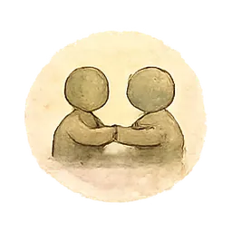
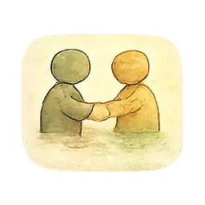
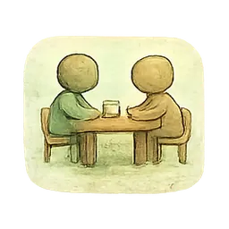
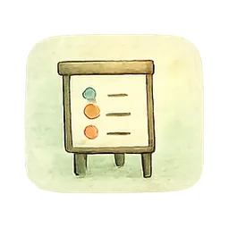
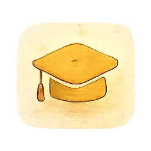

Fallverstehen
Ich schaue mit euch hin, ordne ein und mache Dynamiken im System verstehbar – mit überprüfbaren Vermutungen statt fertiger Erklärungen.

Für Kitas, Schulen und Teams
Weniger Schuldverschiebung. Mehr Orientierung.
Ich unterstütze Teams dabei, Verhalten nicht vorschnell zu bewerten, sondern gemeinsam zu verstehen: systemisch, klar und alltagstauglich.

Wobei ich Teams begleite
Ich schaue mit euch hin, ordne ein und mache Dynamiken im System verstehbar – mit überprüfbaren Vermutungen statt fertiger Erklärungen.
Klar, respektvoll und verständlich mit Eltern ins Gespräch kommen – auch wenn die Lage angespannt ist.
Strategien für akute Situationen und Wege zur Prävention. Zuerst sichern, dann regulieren, später verstehen.

Die eigene Haltung stärken und Kinder begleiten, ohne Regulation mit Gehorsam zu verwechseln.
Kleine Schritte, klare Absprachen und Routinen, die zwischen Tür und Angel tragen.
Personalmangel, Gruppengröße, Zeitdruck: Nicht jedes Hindernis wird in eine innere Aufgabe umgedeutet.
Formate

Individuelle Begleitung für Teams und Leitungen bei konkreten Fragen.

Fälle reflektieren, Hypothesen entwickeln und nächste Schritte vereinbaren.

Interaktive Workshops für Teams – praxisnah und auf euren Bedarf zugeschnitten.

Fachliche Impulse und Fortbildungen – kompakt und mit Fallarbeit.
Ich verbinde Heilpädagogik, eigene Familienerfahrung und viele Jahre IT- und Systemdenken. Dadurch übersetze ich zwischen Fachlichkeit, Alltag und Struktur – ohne Menschen aus dem Blick zu verlieren.


Erzählt mir kurz, woran es gerade hängt – ich melde mich innerhalb von zwei Werktagen.